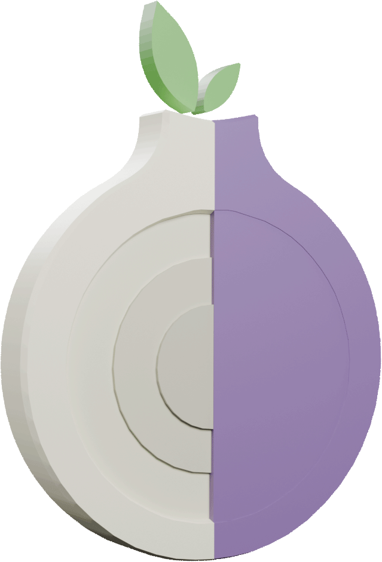

Анонимность
Быть анонимным в сети невозможно, и об этом важно помнить. Всё, что однажды
попало в Интернет, остается там навсегда. Даже если пользователь пытался скрыть о себе всю
информацию, его всё равно можно найти. Особенно это касается преступников, которые хотят
сохранить в тайне свои действия. Они создают фейковые профили в социальных сетях и
используют
специальные программы-анонимайзеры, но это не делает их невидимыми.
Каждое действие в Интернете оставляет след, содержащий информацию об устройстве, с которого
оно
совершено, будь то телефон или компьютер. Интернет-провайдер фиксирует всю активность
пользователя, и эта информация может стать доступной кому угодно — от сотрудников
правоохранительных органов до злоумышленников.
Интернет — это публичное пространство, подобное улице, парку или школе, где действуют
правила
вежливого общения. Следует относиться к другим людям с уважением и вести себя так, как
хотелось
бы, чтобы вели себя с тобой. Клевета и оскорбления в сети являются правонарушениями, за
которые
предусмотрена ответственность. Важно проявлять понимание и сострадание к окружающим, ведь за
каждым профилем стоит реальный человек.